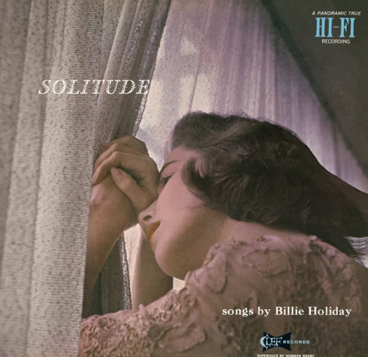
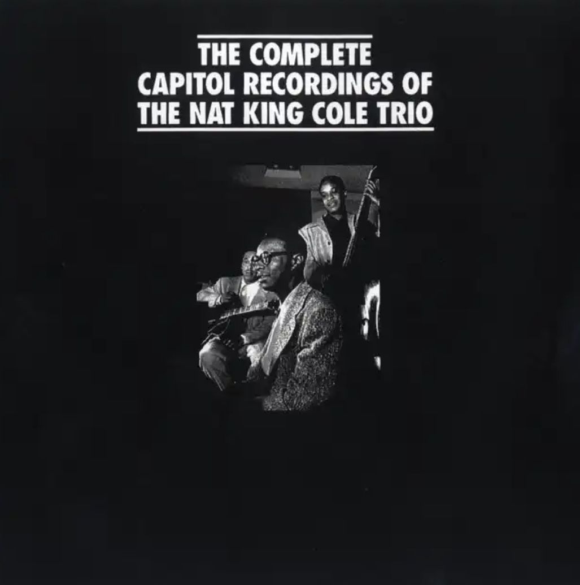
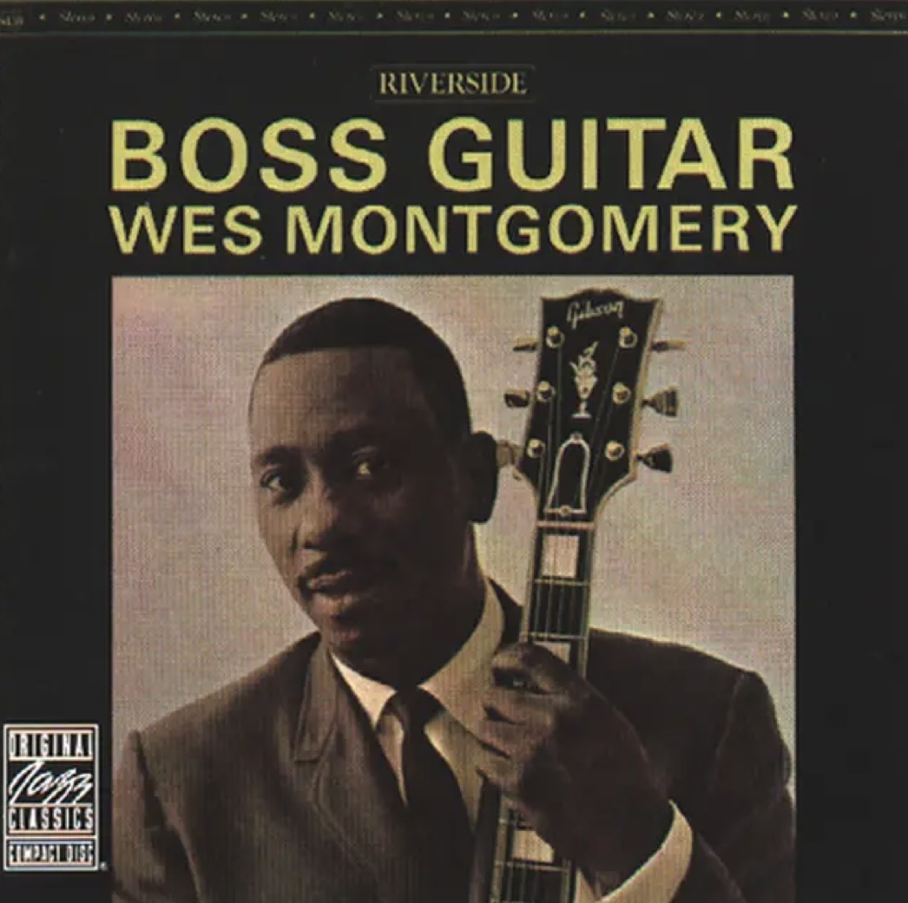
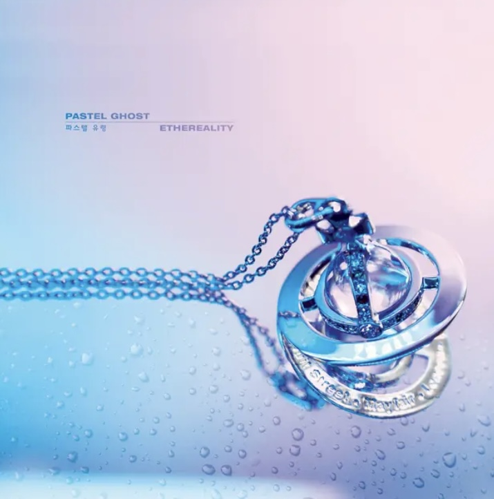
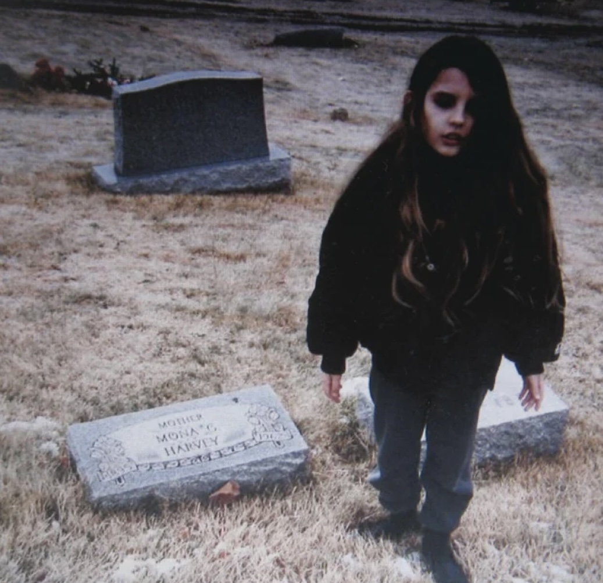
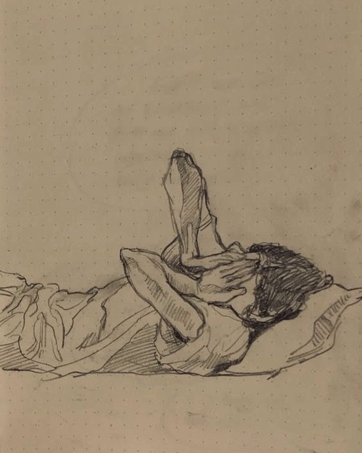
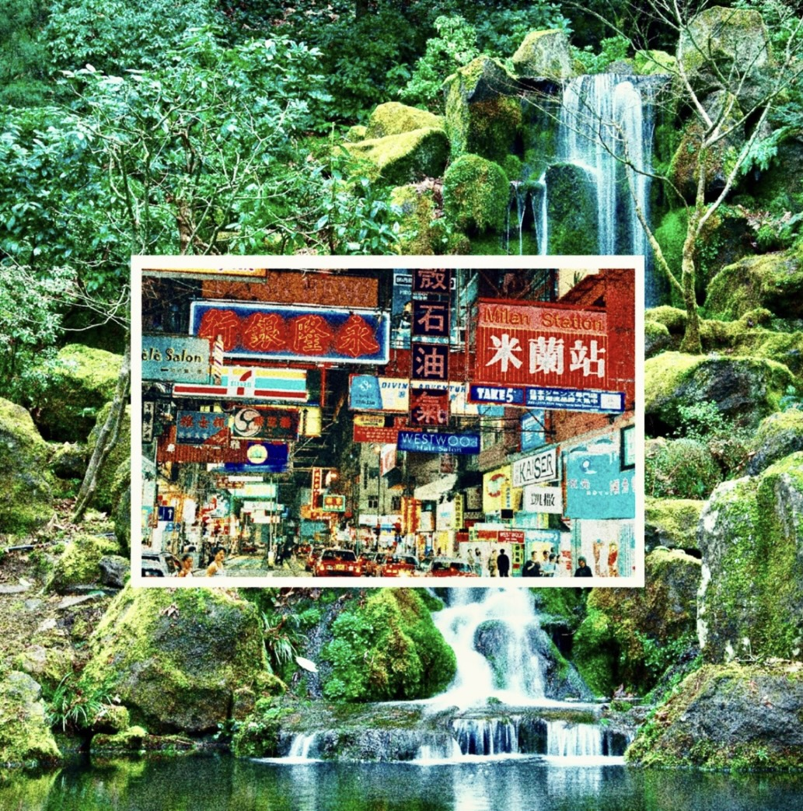
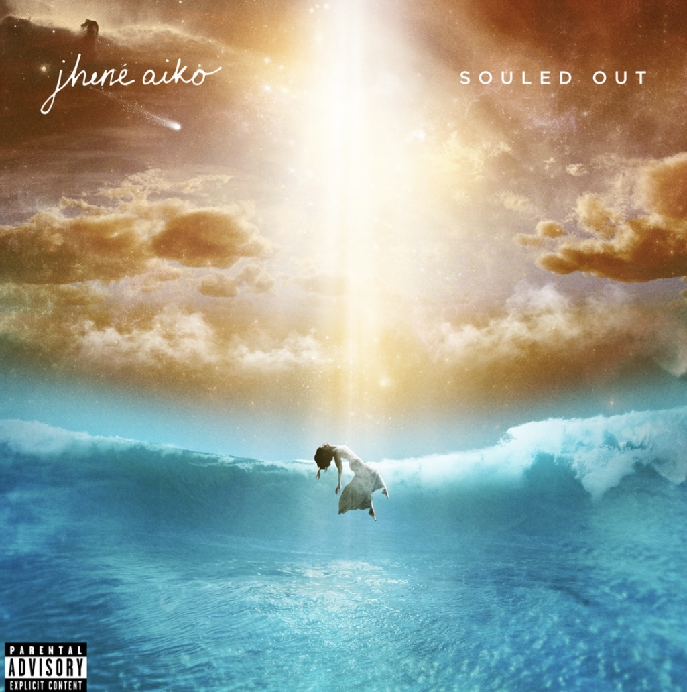

Playlists
Midnight Walk in Paris
What a Different a Day Makes
nbsp;
Bobby Darin
-2:46

Blue Moon
Billie Holiday
3:26
What a Different a Day Makes
Bobby Darin
3:35

Blue and Sentimentl
Nat King Cole Trio
2:35

Days of Wine and Roses
Wes Montgomery
3:45
idk
Char
Crystal Castles
-2:15

Iris
Pastel Ghost
3:38

Suffocation
Crystal Castles
4:02
Char
Crystal Castles
3:08
Midnight Skin
Akiaura, LONOWN
3:20
My Playlist #8

Feels Like Summer
Childish Gambino
-0:59
Fees Like Summer
Pastel Ghost
4:58

YLWIM
Yot Club
3:30
Char
ZTVZ
3:08

The Pressure
Jhené Aiko
3:58